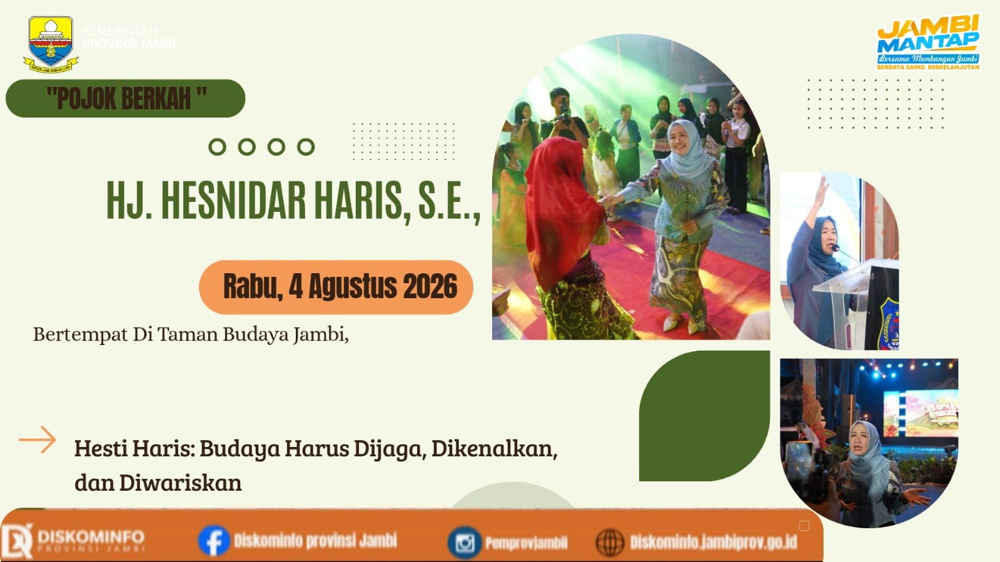
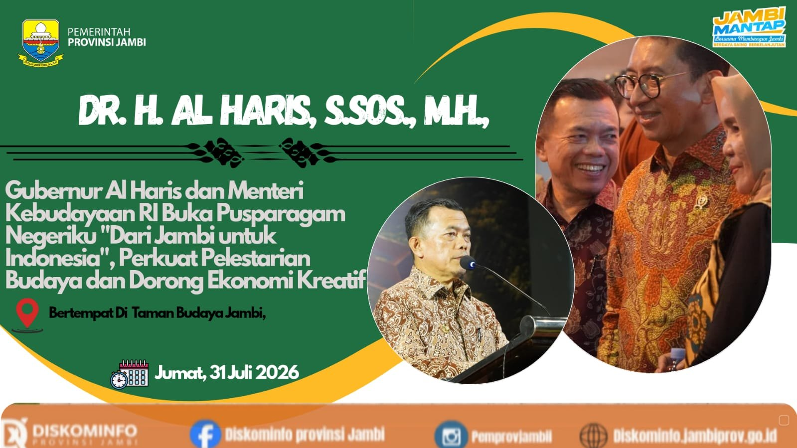
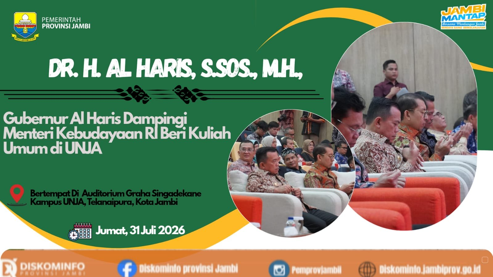
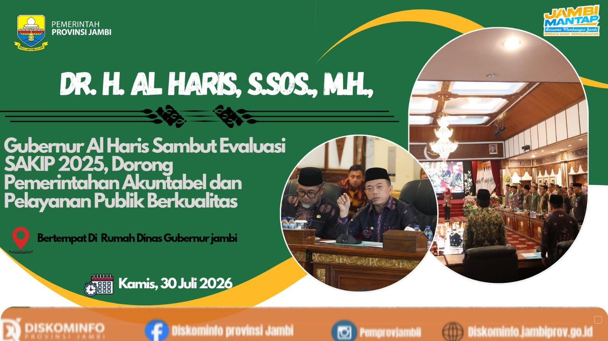
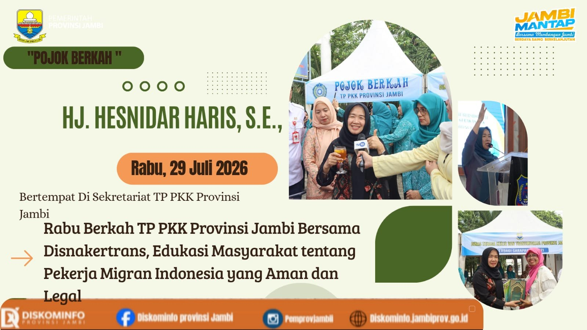
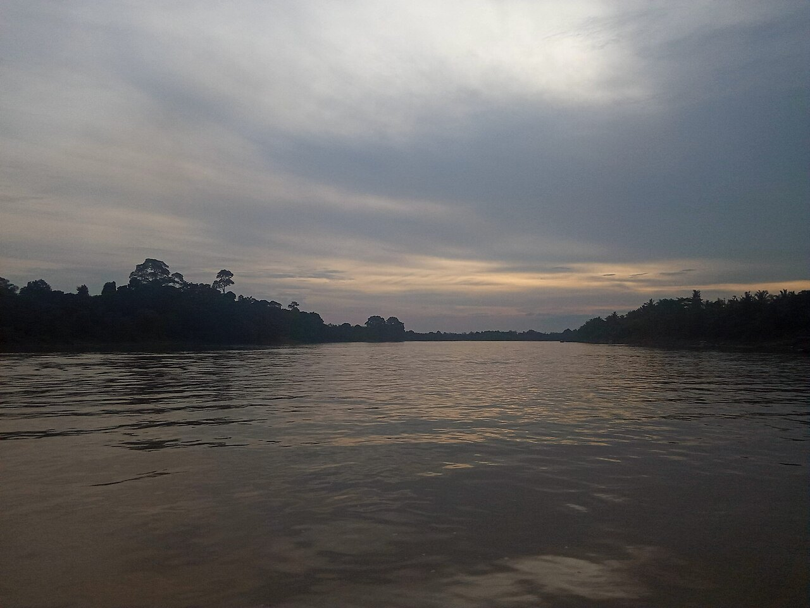
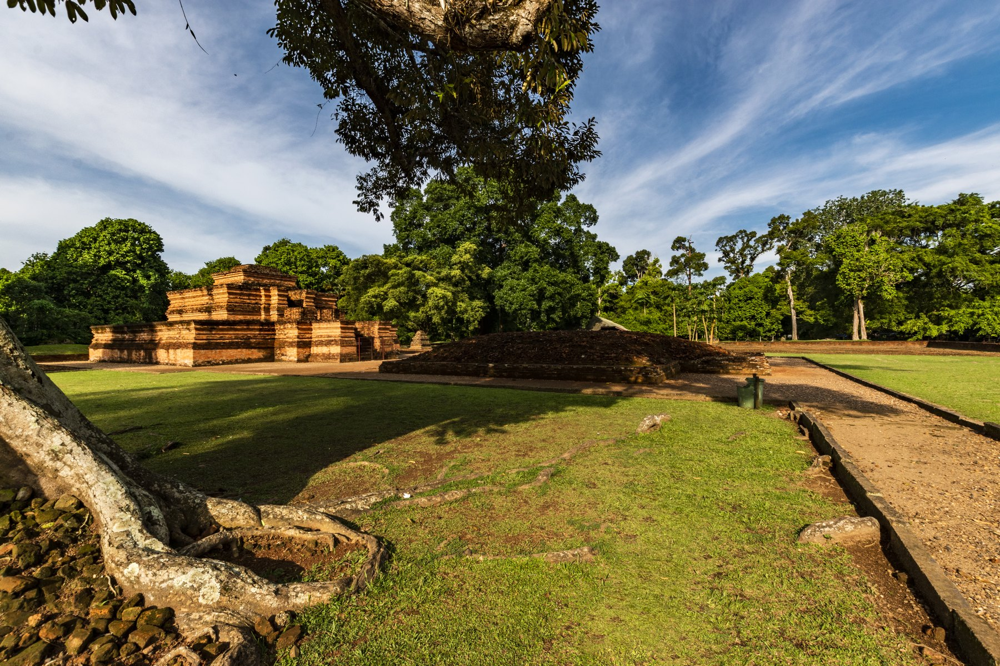
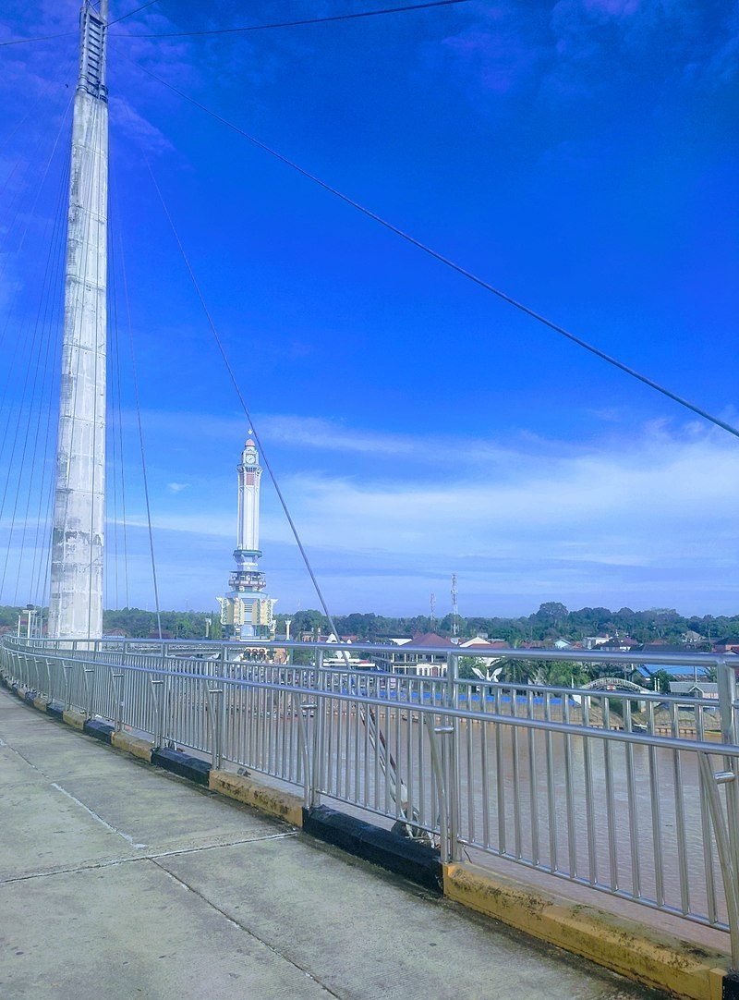
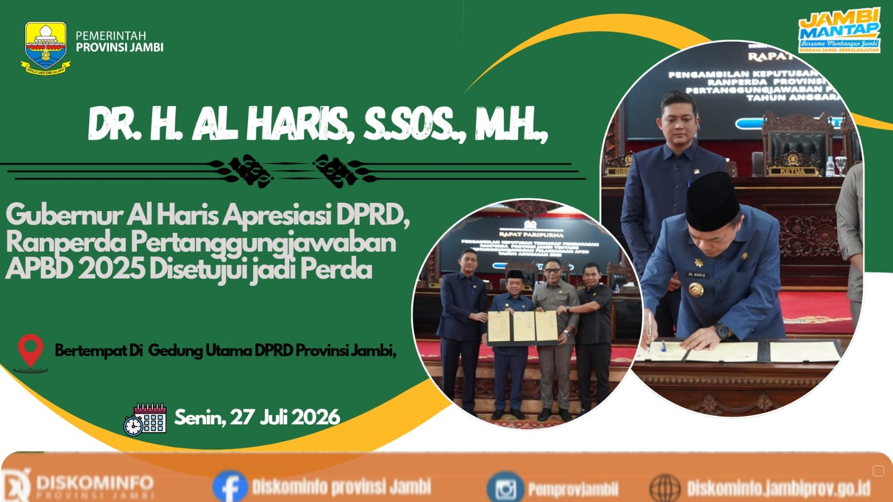
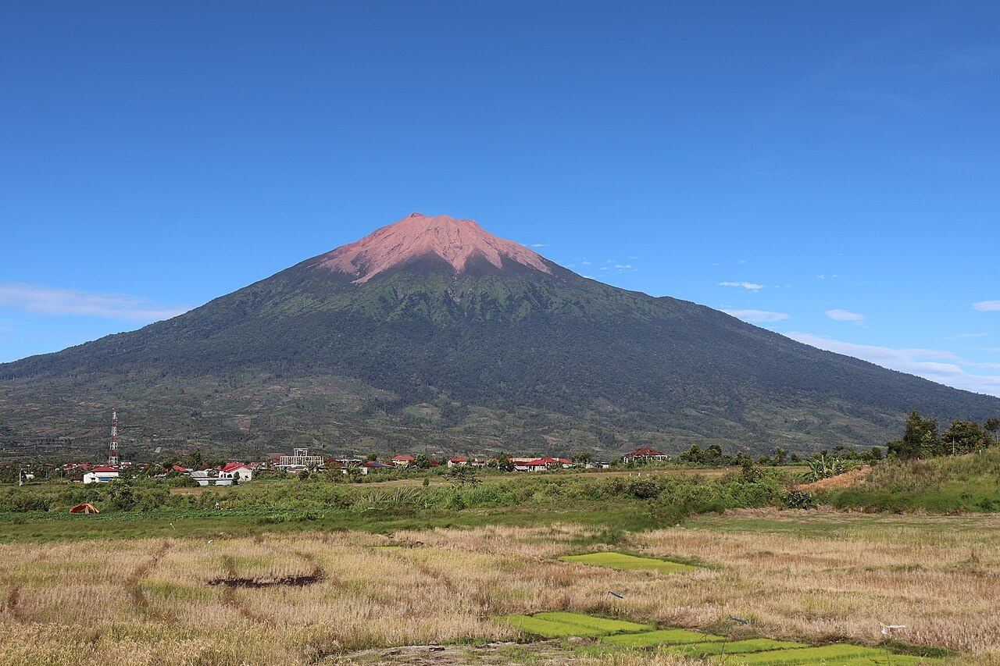

Hesti Haris: Budaya Harus Dijaga, Dikenalkan, dan Diwariskan
Penutupan Festival Pusparagam Negeriku menjadi ruang apresiasi terhadap kekayaan budaya dan tradisi yang hidup di Provinsi Jambi.
SelengkapnyaDari kabar terbaru sampai layanan yang kamu butuhkan. Jelajahi Provinsi Jambi, semuanya dari satu portal.
Lima berita terbaru dari Pemerintah Provinsi Jambi.

Penutupan Festival Pusparagam Negeriku menjadi ruang apresiasi terhadap kekayaan budaya dan tradisi yang hidup di Provinsi Jambi.
Selengkapnya
Pemerintah Provinsi Jambi dan Kementerian Kebudayaan memperkuat kolaborasi pemajuan kebudayaan, museum, seni, dan ekonomi kreatif.
Selengkapnya
Kuliah umum di Universitas Jambi membahas pemajuan kebudayaan, peran perguruan tinggi, riset, dan keterlibatan generasi muda.
Selengkapnya
Evaluasi SAKIP menjadi bagian dari penguatan akuntabilitas, pengukuran kinerja, dan kualitas pelayanan publik Pemerintah Provinsi Jambi.
Selengkapnya
Kegiatan Rabu Berkah menghadirkan edukasi mengenai prosedur pekerja migran Indonesia yang aman, legal, dan sesuai ketentuan.
SelengkapnyaSampaikan aspirasi, temukan data, dan kenali program daerah.

Jambi memiliki kawasan dataran rendah, aliran Sungai Batanghari, hingga kawasan pegunungan Kerinci di bagian barat provinsi.
Baca Sekilas JambiAPBD, RKA, DPA, laporan realisasi, LKPD, LHKPN, dan dokumen pembangunan dapat ditelusuri melalui halaman internal website.
Buka Transparansi


